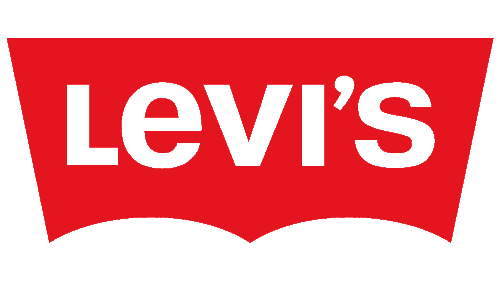

Levi's e sua historia.
o começo de tudo
Considerada a "vestimenta do seculo" XX pela gigante revista norte-americana, time. Levi strauss & Co é fundada em 1853, com a chegada do senhor levi strauss em Sao Francisco em meio a epoca da corrida do ouro para abrir uma merceria. Assim entao vendendo roupas, botas e alguns produtos para outras lojas de varejo no oeste americano. Em 1872, jacob davis, um alfaiate de Reno, nevada, juntou-se ao senhor levi strauss para inventar e patentear um vestuario de trabalho que fosse reforçado com rebites, feitos de brim e algodao.
Em 1873 Jacob e levi criam um modelo de roupas feitas com denim true blue reforçadas com os famosos rebites, sempre pensadas com intuito de que fossem resistentes para os trabalhadores conseguirem usa-las em trabalhos mais pesados sem rasga-las com facilidade. Assim entao pateteada em 20 de maio de 1873, US Patent and Trademark Office (Escritório de Marcas e Patentes dos EUA) concede a patente no. 139121 a Levi Strauss & Co. e Jacob Davis por sua invenção. Assim nasceu o jeans originalmente chamado "XX" que em so 1890 recebeu seu iconico numero de lote, 501®.

sinonimo de resistencia
1886 foi o ano que foi criada a logo "two horse" que teve como intençao demonstrar para as pessoas a incrivel força das roupas levi's®. Essa logo foi colocada pela primeira vez no patch de cour do jeans "xx" em 1886 e continua seno usada até os dias atuais.
expansao
O senhor Levi Strauss morreu no mes de setembro de 1902, assim entao seus sobrinhos assumem os negocio e fizeram varias doaçoes de caridade da bay area que atendiam crianças e pessoas carentes.
Seis anos apos a morte de Levi strauss a marca Two horses e registrada no japao e o alcance global da levi's® começa com mercados como Australia e Africal do Sul logo após.
Sendo projetada para dar as mulheres mais liberdade de movimento e conforto, foi criada entao em 1918 a primeira calça levi's feminina.
redtab
A etiqueta do Red Tab foi criada em 1936, colocado no bolso traseiro direito dos jeans, e a palavra levi's® e costurada em branco com letras maiuscilas apenas em um lado feito para diferenciar os jeans levi's® dos concorrentes.
A Logo
Desenhada por Walter Landor & Associates a marca "betwing" tornou-se uma abreviaçao da propria marca Levi's®.
depois das telas
Na decada de 1950 o denim foi proibido em algumas escolas, principalmente do leste, por ser uma má influencia. sendo retrato de adolecentes problematicos que usavam o jeans no cinema e na TV levou muitas escolas proibirem o denim em sala de aula, com medo que os alunos rebelarem por conta do uso de uniformes.
oldfits
em 1996 a levi's entra em ascenssao com o lançamento de Levi's® Clothing, uma linha que produz fielmente os fits, tecidos e caracteristicas das roupas historicas da Levi's. E em 1999 a revista time elege ao jeans 501® como o item fashion do seculo. No mesmo ano o jeans 501® passa por uma engenharia reversa e os Engineered Jeans sao lançados em todo mundo.
pensando em econimia
Com intuito de representar uma econimia de agua, a Levi's lança em 2011 o Levi's Waterless, economizando mais de 880 milhoes de litros de agua no processo de lavagem e mais de 16 milhoes de litros de agua que foram reutilizados, produzindo mais de 75 milhoes de peças Levis Waterless.